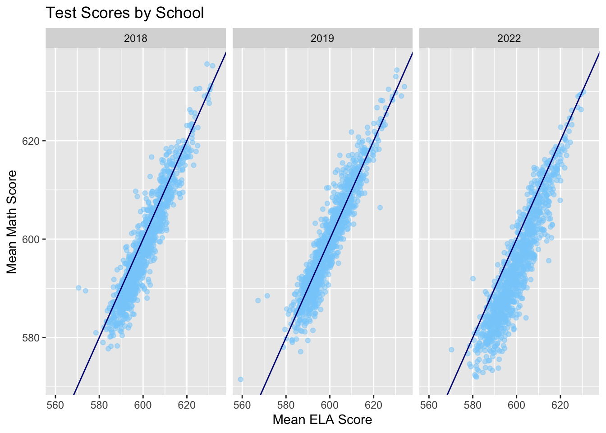
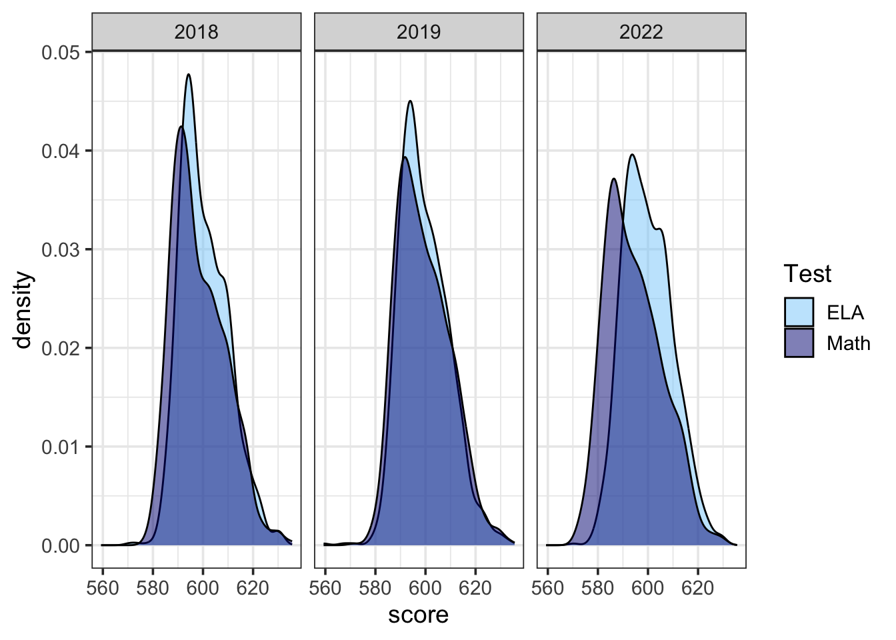

Chapter 4 Results
4.1 Analyzing standardized test scores
4.1.1 Descriptive Statistics
| 2018 | 2019 | 2022 | |
|---|---|---|---|
| min | 577.72 | 571.50 | 572.00 |
| max | 635.59 | 634.35 | 629.95 |
| mean | 598.46 | 599.27 | 594.48 |
| sd | 10.47 | 10.34 | 11.20 |
| var | 109.72 | 106.93 | 125.50 |
| kurtosis | 2.87 | 2.79 | 2.64 |
| skewness | 0.62 | 0.52 | 0.50 |
| Shapiro-Wilk p value | 0.00 | 0.00 | 0.00 |
| 2018 | 2019 | 2022 | |
|---|---|---|---|
| min | 570.58 | 559.30 | 570.30 |
| max | 631.72 | 634.06 | 630.56 |
| mean | 600.51 | 599.59 | 599.93 |
| sd | 9.43 | 9.59 | 9.68 |
| var | 88.99 | 91.94 | 93.77 |
| kurtosis | 3.04 | 3.38 | 2.73 |
| skewness | 0.57 | 0.49 | 0.36 |
| Shapiro-Wilk p value | 0.00 | 0.00 | 0.00 |
4.1.2 Reading vs. Math Scatterplot
In investigating the relationship between Reading and Math scores, we started very broad by asking ourselves if there is a correlation between success on Math & success on ELA. We chose to break this down at the school level, because there is a lot more data for us to work with.

The graphs above are three scatterplots of reading vs math test scores, separated based on the year the test was taken. The two main takeaways here are that there seems to be a strong positive correlation between reading and math scores in all three years, as one might expect. In other words, schools that performed well in math usually did well on reading too, and vice-versa. There were a few outliers each year, where some schools did noticeably better on math than on reading. There were also a few, less noticeable, schools who performed slightly better on ELA than on math.
4.1.3 Correlation Analysis
Let’s find the correlation between the Math and ELA scores to gain more insight on them analytically:
Since the Math and ELA scores are not normally distributed in any year we will use the Spearman’s correlation to examine the strength of the linear relationship between scores in each year. The data meets the assumptions for calculating Spearman’s correlation coefficient because test scores each year are on an interval scale, they represent paired observations, and they have a monotonic relationship (as shown above). This is what we get:
| 2018 | 2019 | 2022 | |
|---|---|---|---|
| Spearman correlation coefficient | 0.937 | 0.941 | 0.922 |
The second big takeaway from these scatterplots is that math scores were much lower in 2022 than in years prior. There is also more variance in scores in 2022, which is demonstrated by the relatively lower correlation coefficient and the higher variance of our scatterplot than in the other two years. We can likely attribute this to the onset of the Covid-19 global pandemic, which abruptly forced students to adapt to online learning for anywhere between six months to an entire school year.
Let’s look at the spread of the scores during these years:
Looking at this table we can confirm that the variance was higher for Math & ELA in 2022.
4.1.4 Density Histogram of Test Scores
Now that we’ve investigated the relationship between success on both exams, we want to know which exam students actually performed better on, over the years. Again, we are looking at this data on the school level because there is more data to work with.

Looking at our density histograms, we can see that there is a lot of overlap between scores in both subjects in this three year sample size. At first glance, it seems like student’s are performing slightly better on ELA than Math.
4.1.5 Confidence Intervals
In order to test the significance of the difference in test scores, we can utilize the t-test. Our null-hypothesis is that the two sample means are equal (or that the test scores are the same).
| Lower boundary | Upper boundary | Wilcox test p-value | |
|---|---|---|---|
| 2018 | -2.671 | -2.384 | 0 |
| 2019 | -2.671 | -2.384 | 0 |
| 2022 | -2.671 | -2.384 | 0 |
Looking at the result of our t-test, we cannot reject the null hypothesis that our two sample means are the same, even at the 1% level of significance! Therefore, there is no evidence of a significant difference between math & reading scores during the three year period that our data comes from.
Even when we repeat the test only looking at the year 2022 (where we noticed a bigger difference than years prior in our density histogram), there is still not enough evidence to reject the null hypothesis that the two sample means are the same, once again at the 1% level of significance.
4.2 Analyzing student demographics
4.2.3 Descriptive statistics & Diversity scores
((Diversity Index) [https://geographyfieldwork.com/Simpson'sDiversityIndex.htm#:~:text=Simpson’s%20Diversity%20Index%20is%20a,evenness%20increase%2C%20so%20diversity%20increases.&text=The%20value%20of%20D%20ranges%20between%200%20and%201.] )
| District | Asian | Black | Hispanic | White | ELL | SWD | Poverty | ENI | Diversity |
|---|---|---|---|---|---|---|---|---|---|
| 1 | 0.21 | 0.15 | 0.42 | 0.18 | 0.08 | 0.22 | 0.64 | 0.66 | 0.73 |
| 2 | 0.22 | 0.14 | 0.33 | 0.26 | 0.08 | 0.18 | 0.54 | 0.53 | 0.76 |
| 3 | 0.09 | 0.21 | 0.32 | 0.32 | 0.05 | 0.18 | 0.49 | 0.49 | 0.74 |
| 4 | 0.09 | 0.24 | 0.60 | 0.05 | 0.10 | 0.24 | 0.82 | 0.82 | 0.58 |
| 5 | 0.04 | 0.48 | 0.39 | 0.06 | 0.08 | 0.24 | 0.82 | 0.83 | 0.61 |
| 6 | 0.01 | 0.07 | 0.84 | 0.06 | 0.27 | 0.21 | 0.84 | 0.83 | 0.29 |
| 7 | 0.01 | 0.27 | 0.69 | 0.02 | 0.16 | 0.24 | 0.92 | 0.92 | 0.45 |
| 8 | 0.06 | 0.21 | 0.65 | 0.06 | 0.14 | 0.24 | 0.83 | 0.83 | 0.53 |
| 9 | 0.01 | 0.27 | 0.69 | 0.01 | 0.22 | 0.23 | 0.92 | 0.93 | 0.45 |
| 10 | 0.08 | 0.15 | 0.69 | 0.06 | 0.21 | 0.20 | 0.83 | 0.83 | 0.49 |
| 11 | 0.09 | 0.38 | 0.43 | 0.09 | 0.12 | 0.20 | 0.79 | 0.77 | 0.66 |
| 12 | 0.03 | 0.24 | 0.70 | 0.01 | 0.21 | 0.23 | 0.92 | 0.92 | 0.45 |
| 13 | 0.21 | 0.41 | 0.17 | 0.17 | 0.04 | 0.14 | 0.64 | 0.61 | 0.73 |
| 14 | 0.05 | 0.20 | 0.56 | 0.16 | 0.11 | 0.21 | 0.72 | 0.75 | 0.62 |
| 15 | 0.16 | 0.13 | 0.36 | 0.30 | 0.14 | 0.20 | 0.56 | 0.57 | 0.73 |
| 16 | 0.02 | 0.72 | 0.20 | 0.03 | 0.05 | 0.25 | 0.84 | 0.84 | 0.44 |
| 17 | 0.03 | 0.73 | 0.16 | 0.05 | 0.10 | 0.19 | 0.80 | 0.76 | 0.43 |
| 18 | 0.02 | 0.84 | 0.08 | 0.04 | 0.07 | 0.20 | 0.77 | 0.71 | 0.29 |
| 19 | 0.08 | 0.43 | 0.45 | 0.02 | 0.14 | 0.21 | 0.87 | 0.86 | 0.61 |
| 20 | 0.44 | 0.03 | 0.27 | 0.26 | 0.22 | 0.16 | 0.76 | 0.75 | 0.67 |
| 21 | 0.26 | 0.13 | 0.25 | 0.34 | 0.17 | 0.18 | 0.72 | 0.73 | 0.74 |
| 22 | 0.21 | 0.28 | 0.15 | 0.33 | 0.12 | 0.17 | 0.70 | 0.64 | 0.74 |
| 23 | 0.01 | 0.74 | 0.22 | 0.01 | 0.05 | 0.25 | 0.90 | 0.89 | 0.41 |
| 24 | 0.20 | 0.02 | 0.63 | 0.13 | 0.23 | 0.17 | 0.76 | 0.72 | 0.54 |
| 25 | 0.49 | 0.07 | 0.30 | 0.12 | 0.19 | 0.14 | 0.69 | 0.63 | 0.65 |
| 26 | 0.53 | 0.11 | 0.18 | 0.15 | 0.08 | 0.15 | 0.58 | 0.47 | 0.65 |
| 27 | 0.22 | 0.22 | 0.40 | 0.10 | 0.11 | 0.18 | 0.76 | 0.69 | 0.73 |
| 28 | 0.30 | 0.20 | 0.28 | 0.16 | 0.11 | 0.15 | 0.68 | 0.61 | 0.76 |
| 29 | 0.17 | 0.60 | 0.17 | 0.02 | 0.09 | 0.16 | 0.73 | 0.63 | 0.59 |
| 30 | 0.21 | 0.06 | 0.53 | 0.17 | 0.17 | 0.15 | 0.70 | 0.68 | 0.64 |
| 31 | 0.12 | 0.12 | 0.29 | 0.44 | 0.07 | 0.24 | 0.58 | 0.53 | 0.69 |
| 32 | 0.02 | 0.16 | 0.78 | 0.02 | 0.21 | 0.20 | 0.87 | 0.86 | 0.36 |
4.3 How does demographic information impact student performance
4.3.1 Regression Analysis
##
## Call:
## lm(formula = `Mean Scale Score_e` ~ `% Poverty` + `% ELL` + `% SWD` +
## ENI + Diversity, data = lm_school)
##
## Residuals:
## Min 1Q Median 3Q Max
## -30.7458 -3.6140 -0.2434 3.4004 25.9374
##
## Coefficients:
## Estimate Std. Error t value Pr(>|t|)
## (Intercept) 625.8110 0.6395 978.543 < 2e-16 ***
## `% Poverty` -7.2534 1.5998 -4.534 6.00e-06 ***
## `% ELL` -5.6060 0.9778 -5.733 1.07e-08 ***
## `% SWD` -29.1861 1.6810 -17.362 < 2e-16 ***
## ENI -21.1953 1.6354 -12.960 < 2e-16 ***
## Diversity 4.3798 0.6806 6.435 1.41e-10 ***
## ---
## Signif. codes: 0 '***' 0.001 '**' 0.01 '*' 0.05 '.' 0.1 ' ' 1
##
## Residual standard error: 5.625 on 3322 degrees of freedom
## Multiple R-squared: 0.6553, Adjusted R-squared: 0.6548
## F-statistic: 1263 on 5 and 3322 DF, p-value: < 2.2e-16##
## Call:
## lm(formula = `Mean Scale Score_m` ~ `% Poverty` + `% ELL` + `% SWD` +
## ENI + Diversity, data = lm_school)
##
## Residuals:
## Min 1Q Median 3Q Max
## -29.9200 -4.4477 -0.3955 4.1948 31.0179
##
## Coefficients:
## Estimate Std. Error t value Pr(>|t|)
## (Intercept) 625.4854 0.7999 781.965 < 2e-16 ***
## `% Poverty` -6.0238 2.0010 -3.010 0.00263 **
## `% ELL` 6.0043 1.2230 4.910 9.57e-07 ***
## `% SWD` -36.0549 2.1025 -17.149 < 2e-16 ***
## ENI -26.0826 2.0455 -12.751 < 2e-16 ***
## Diversity 4.6265 0.8513 5.435 5.88e-08 ***
## ---
## Signif. codes: 0 '***' 0.001 '**' 0.01 '*' 0.05 '.' 0.1 ' ' 1
##
## Residual standard error: 7.036 on 3322 degrees of freedom
## Multiple R-squared: 0.5827, Adjusted R-squared: 0.582
## F-statistic: 927.6 on 5 and 3322 DF, p-value: < 2.2e-16